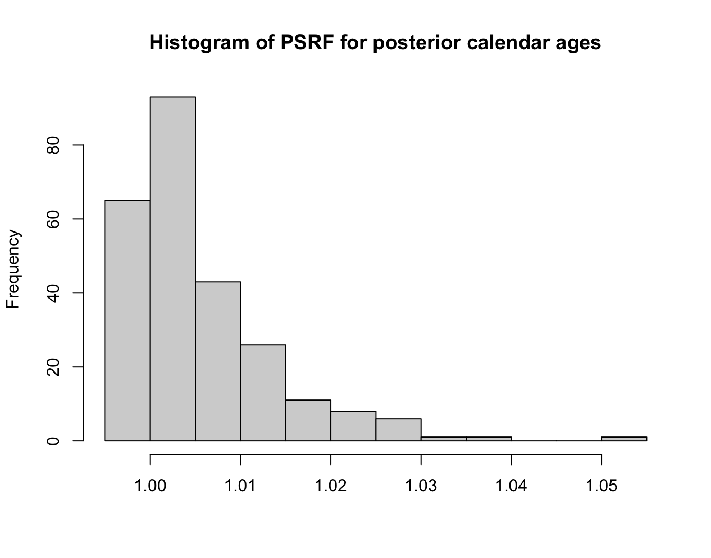
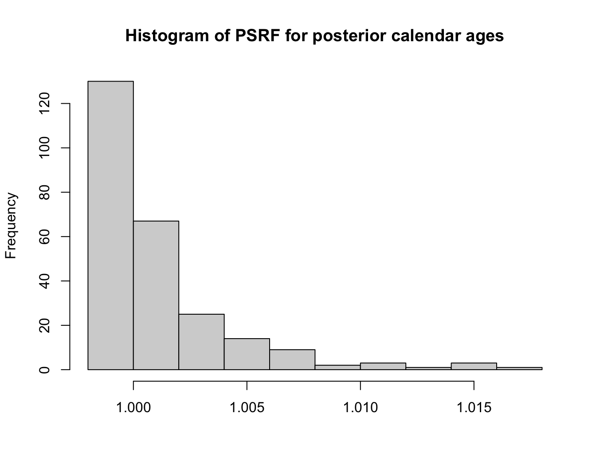
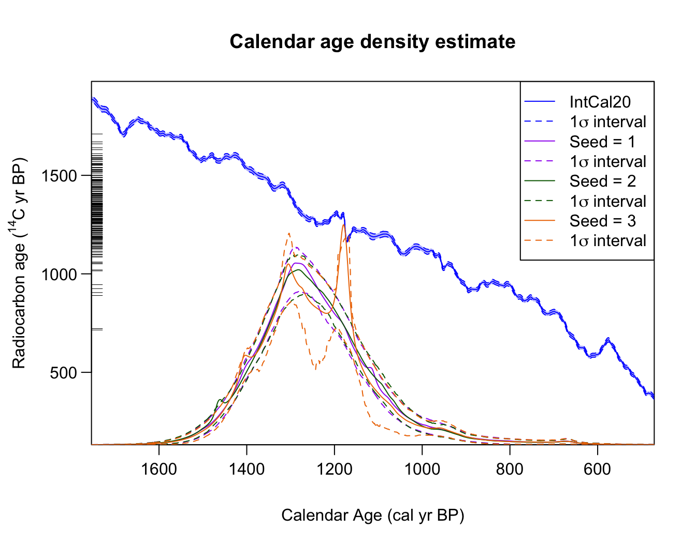
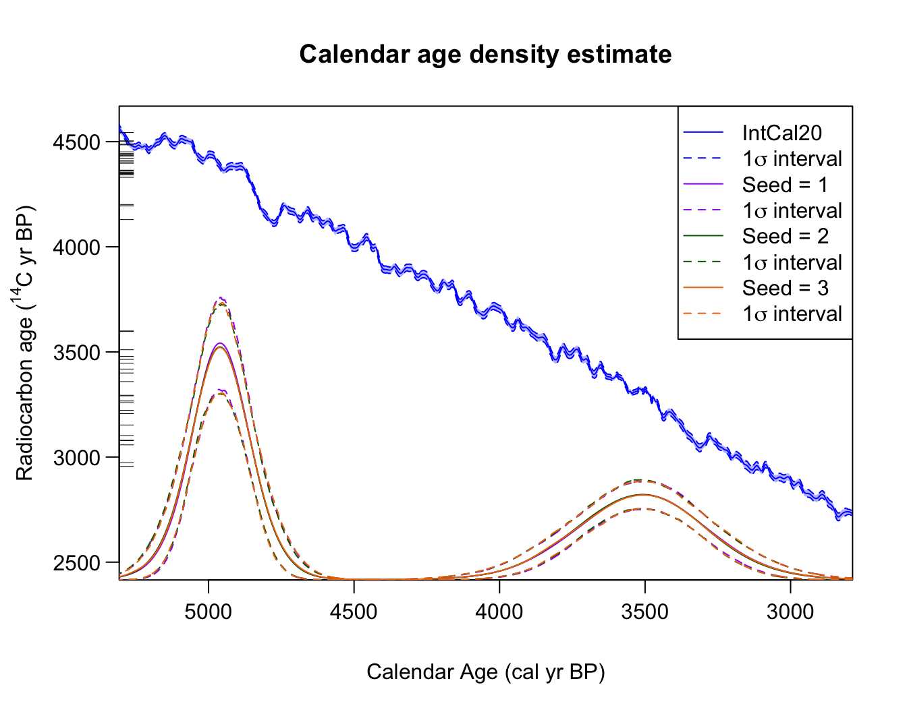
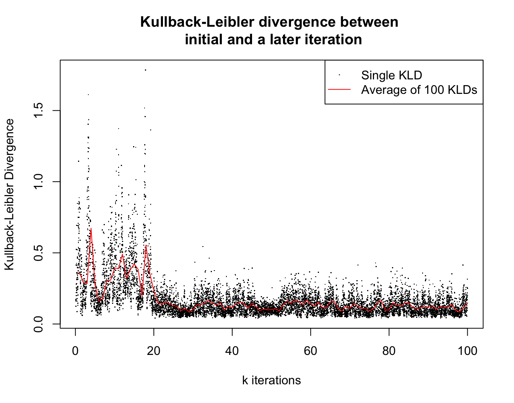

Introduction
A few tools to determine how well the MCMC for the various aproaches have converged.
Examining the Gelman-Rubin convergence diagnostic
This is often used to evaluate MCMC convergence. It compares the between-chains variance with the within-chains variance of the model parameters for multiple MCMC chains. If the MCMC has converged to the target posterior, then these values should be similar. To assess convergence of our methods, we apply it to the individual posterior calendar age estimates of the 14C samples. We have \(N\) such samples, each of which has a individual sequence of sampled calendar age values that are stored within the overall MCMC. We calculate the potential scale reduction factor (PSRF) for each individual sample’s calendar age sequence, generating \(N\) PSRF values. If the MCMC has converged to the target posterior distribution, then each of these PSRFs should be close to 1.
In the first case, the relevant MCMC function can be run multiple times. This generate different chains.
all_outputs <- list()
for (i in 1:3) {
set.seed(i + 1)
all_outputs[[i]] <- PolyaUrnBivarDirichlet(
kerr$c14_age, kerr$c14_sig, intcal20, n_iter = 1e4)
}
PlotGelmanRubinDiagnosticMultiChain(all_outputs)
It can also be calculated by taking a single MCMC run, and splitting it into multiple parts to compare the within-segment variance with the between-segment variance for each calendar age observation.
set.seed(3)
output <- PolyaUrnBivarDirichlet(
kerr$c14_age, kerr$c14_sig, intcal20, n_iter = 2e4)
PlotGelmanRubinDiagnosticSingleChain(output, n_burn = 5e3)
As you can see, even with a few iterations (where we would expect the result not to have converged yet) the PSRF values are close to one.
Examining the predictive distribution or posterior occurrence rate
When calibrating multiple 14C determinations, primary interest will frequently be in the summarised (predictive) calendar age estimate if using the Bayesian non-parametric method, or the posterior occurrence rate if using the Poisson process approach, rather than the age of any individual sample. Information on the predictive estimate is encapsulated in the model parameters relating to the underlying clusters (e.g., weights and distributions). While the occurrence rate is defined by the locations of the changepoints, and the segment heights, in the Poisson process model.
Unfortunately, the chains storing these parameters are not suitable for the Gelman-Rubin diagnostic. In the case of the predictive Bayesian non-parametric estimate, the number and identity of the clusters stored in the MCMC can change with each iteration (as clusters drop-in and out, or are relabelled). In the case of the Poisson process occurrence rate, the number and labelling of changepoints varies throughout the MCMC. We therefore provide a further diagnostic, based upon assessing the predictive calendar age estimate or posterior occurrence rate, which may be a much more useful indicator of MCMC convergence.
Visually comparing multiple runs
Running the functions a few time with different random number seeds can give an idea of how many iterations are needed for convergence. If the MCMC has converged, then each run should lead to a similar result for the predictive density (or the posterior occurrence rate in the case of the POisson process model). For example,
outputs <- list()
for (i in 1:3) {
set.seed(i+1)
outputs[[i]] <- PolyaUrnBivarDirichlet(
rc_determinations = kerr$c14_age,
rc_sigmas = kerr$c14_sig,
calibration_curve=intcal20,
n_iter = 1e4)
outputs[[i]]$label <- paste("Seed =", i)
}
PlotPredictiveCalendarAgeDensity(
outputs, n_posterior_samples = 500, denscale = 2, interval_width = "1sigma")
As you can see, in this case (255 determinations collated by Kerr and McCormick [@kerr2014]) the different runs do not have similar outputs, so more iterations would be needed to ensure convergence.
In contrast, if we run a much simpler example (that of artificial data comprised of two normals), we can see that convergence appears to be achieved in a small number of iterations.
outputs <- list()
for (i in 1:3) {
set.seed(i + 1)
outputs[[i]] <- PolyaUrnBivarDirichlet(
rc_determinations = two_normals$c14_age,
rc_sigmas = two_normals$c14_sig,
calibration_curve=intcal20,
n_iter = 1e4)
outputs[[i]]$label <- paste("Seed =", i)
}
PlotPredictiveCalendarAgeDensity(
outputs, n_posterior_samples = 500, denscale = 2, interval_width = "1sigma") This approach to assessing convergence can be taken with either the Bayesian non-parametric method, or the Poisson process modelling.
Examining the Kullback–Leibler divergence (Bayesian non-parametrics only)
We also provide a further diagnostic specifically for the Bayesian non-parametric approach (it is not applicable for the Poisson process model). This diagnostic gives a measure of the difference between an initial (baseline) predictive density and the predictive density as the MCMC progresses.
set.seed(50)
output <- WalkerBivarDirichlet(
rc_determinations = kerr$c14_age,
rc_sigmas = kerr$c14_sig,
calibration_curve=intcal20,
n_iter = 1e5)
PlotConvergenceData(output)
It can give an idea of convergence as well as which iteration number
to use for n_burn when calculating the predictive density
(by default set to half the chain).